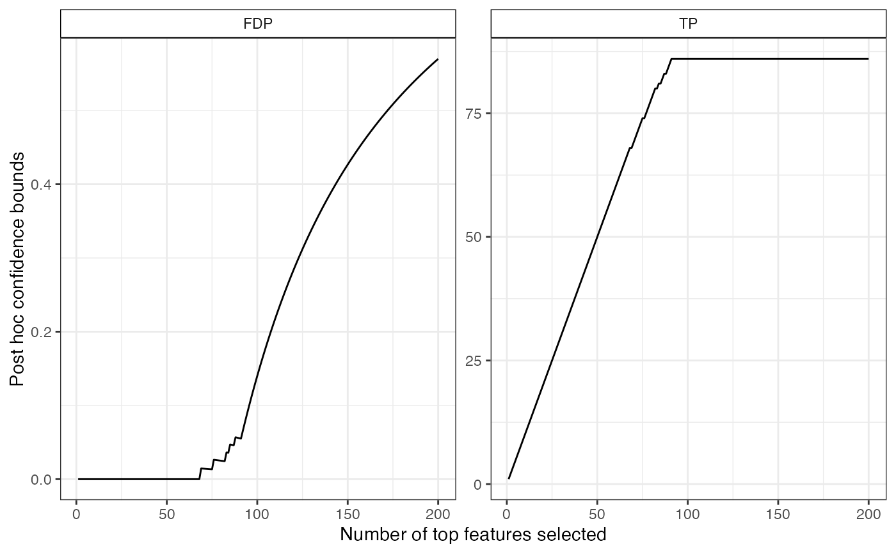

R/confidenceEnvelope.R
confCurveFromFam.RdConfidence bounds on the true/false positives among most significant items
A vector containing the p-values for all m hypotheses, sorted increasingly
A character value, the reference family to be used. Should be either "Simes" (or equivalenlty, "Linear"), "Beta", or "Oracle".
A numeric value or vector of parameters for the reference family.
For JER control over 1:K, ie joint control of all
k-FWER, k <= K. Defaults to m.
A character vector, the names of the post hoc bounds to be computed, among:
FP: Upper bound on the number of false positives in the 'x' most significant items
TP: Lower bound on the number of true positives in the 'x' most significant items
FDP: Upper bound on the proportion of false positives in the 'x' most significant items
TP: Lower bound on the proportion of true positives in the 'x' most significant items.
Defaults to c("TP", "FDP")
A data.frame with m rows and 5 columns:
x: Number of most significant items selected
family: Matches input argument refFamily
param: Matches argument param
procedure: Label for the procedure, typically of the form 'refFamily(param)'
bound: Value of the post hoc bound
stat: Type of post hoc bound, as specified by argument bound
param should be a numeric value unless refFamily == "Oracle". In the latter case, `param`` should be a boolean vector of
length m indicating whether each null hypothesis is true or false.
# Generate Gaussian data and perform multiple tests
sim <- gaussianSamples(m = 502, rho = 0.5, n = 100, pi0 = 0.8, SNR = 3, prob = 0.5)
rwt <- rowWelchTests(sim$X, sim$categ, alternative = "greater")
# calculate, print, and plot confidence bound
cb <- confCurveFromFam(rwt$p.value, refFamily = "Simes", param = 0.1)
head(cb)
#> x label stat bound
#> 1 1 Simes(0.1) TP 1
#> 2 2 Simes(0.1) TP 2
#> 3 3 Simes(0.1) TP 3
#> 4 4 Simes(0.1) TP 4
#> 5 5 Simes(0.1) TP 5
#> 6 6 Simes(0.1) TP 6
plotConfCurve(cb, xmax = 200)
